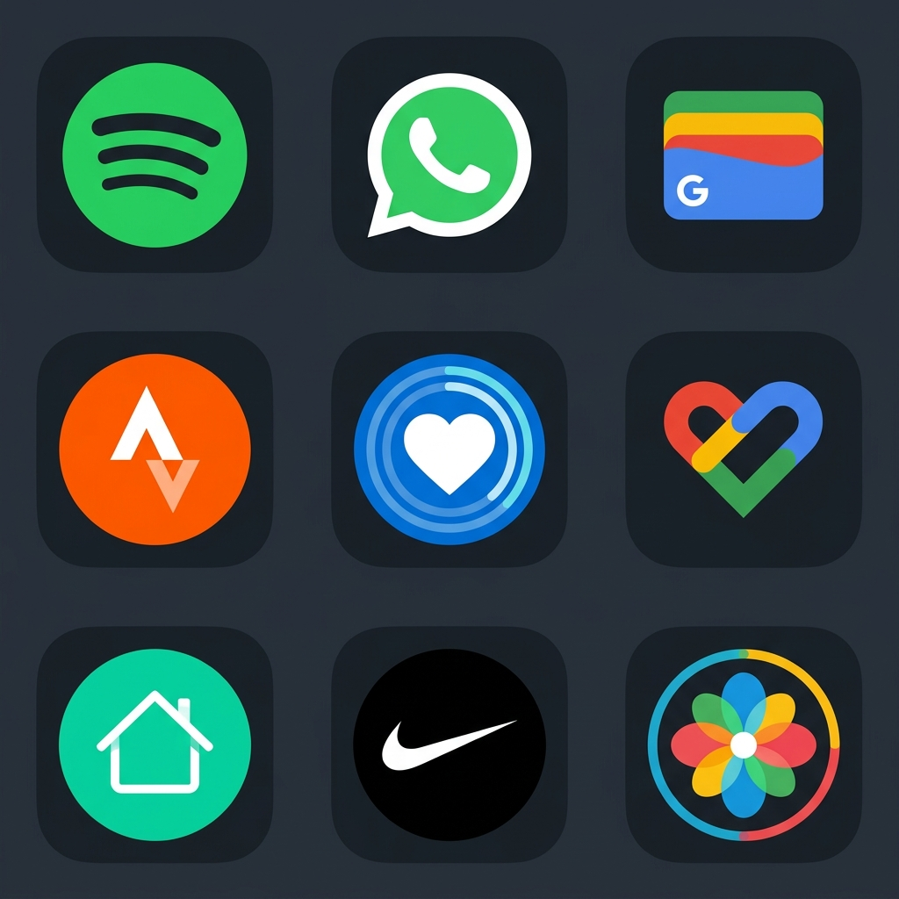

Pour de nombreux propriétaires de montres intelligentes, leur appareil n’est guère plus qu’un compteur de pas et un écran d’alerte. Ils examinent les anneaux de fitness, vérifient les alertes WhatsApp et ignorent les alarmes. Mais sous la surface, les montres intelligentes modernes alimentées par Wear OS de Google sont des ordinateurs indépendants entièrement fonctionnels exécutant un système d’exploitation basé sur Android.
Si vous possédez une Google Pixel Watch, une Samsung Galaxy Watch ou tout autre appareil fonctionnant sous Wear OS 3 ou 4, vous avez accès à un vaste catalogue de logiciels tiers sur le Google Play Store. Ces applications peuvent transformer votre montre intelligente en un outil indépendant et sans téléphone. Dans cet article, nous mettons en avant les meilleures applications et jeux Wear OS qui pousseront votre montre dans ses retranchements.
1. Utilitaires de productivité et de sécurité

La productivité au poignet consiste à accomplir des tâches rapides sans récupérer votre téléphone. Qu'il s'agisse de prendre un mémo vocal rapide ou de vérifier sur un serveur, ces outils sont indispensables :
- Google Conserver :Le compagnon ultime pour les notes de poignet. Keep synchronise automatiquement vos notes téléphoniques avec votre montre. Vous pouvez lire des listes de courses, cocher des tâches et ajouter des idées rapides à l'aide de la dictée vocale lors de vos déplacements.
- Porter SSH :Si vous êtes un développeur, un administrateur système ou un professionnel de la sécurité, des pannes de serveur peuvent survenir à tout moment.PorterSSHest un client de terminal SSH complet conçu spécifiquement pour Wear OS. Il vous permet de vous connecter aux serveurs en toute sécurité avec des mots de passe ou des clés SSH, d'exécuter des commandes de diagnostic et de redémarrer les services directement depuis votre poignet, ce qui est parfait pour des interventions rapides sur le serveur en voyage.
- Google Maps :Grâce à la prise en charge de l'itinéraire hors ligne, Google Maps sur Wear OS vous permet de parcourir les rues de la ville, d'obtenir des itinéraires à pied et d'afficher des itinéraires cartographiques hors ligne, en affichant des invites détaillées directement sur votre écran.
2. Assistants style de vie et culture
Les outils d'assistance Smartwatch sont plus efficaces lorsqu'ils fonctionnent hors ligne, vous permettant d'accéder à des informations quotidiennes importantes sans dépendre des interruptions de connexion cellulaire. Les principaux points forts du style de vie comprennent :
Vêtements Vakit
Vêtements Vakitest une première aide hors ligne pour les musulmans, offrant des heures de prière précises, un outil de comptage numérique Tasbih et une boussole Qibla hors ligne. Parce qu'il enregistre les ressources de la base de données localement, il fonctionne complètement hors ligne sans vider la batterie ni nécessiter une connexion Internet, vous permettant ainsi de rester aligné partout où vous voyagez.
3. Intégrations de maison intelligente
Les contrôles doivent être rapides. Si vous entrez dans une pièce, vous ne voulez pas sortir votre téléphone pour allumer les lumières. L'intégration de Wear OS pour la maison intelligente vous permet d'appuyer sur votre poignet pour contrôler l'ensemble de votre environnement.
Le natifAccueil GoogleL'application pour Wear OS vous permet de regrouper les lumières intelligentes, de régler les thermostats, de verrouiller les portes intelligentes et d'exécuter des routines domestiques complexes directement à partir de la boucle des tuiles. Vous pouvez régler la luminosité de la lumière à l'aide de la touche de défilement de la couronne rotative de votre montre pour un contrôle tactile précis.
4. Smartwatch Gaming : du plaisir au poignet
Peut-on vraiment jouer à des jeux sur l’écran d’une montre intelligente ? La réponse est un oui catégorique ! Les jeux sur montre intelligente sont parfaits pour les micro-sessions : attendre un train, faire la queue ou faire une petite pause.
| Titre du jeu | Genre | Points saillants |
|---|---|---|
| Porte d'Anatolie | Action-RPG pixelisé | Un RPG de 24 chapitres se déroulant pendant Malazgirt 1071. Des graphismes en pixels détaillés et un gameplay rétro adapté aux écrans ronds. |
| Porter du disco | Divertissement / Outil | Transforme le cadran de votre montre en un spectacle de lumière rotatif et coloré qui se synchronise avec les cycles de transition HSL. |
| Porter un labyrinthe | Casse-tête / Occasionnel | Utilise le capteur d'inclinaison intégré (gyroscope) de la montre pour faire rouler une balle dans des labyrinthes difficiles. |
Si vous recherchez un jeu narratif profond, consultezPorte d'Anatolie. Cela prouve que les jeux de smartwatch ne doivent pas nécessairement être de simples clones. Vous pouvez contrôler un guerrier pixel, combattre des vagues d'ennemis et parcourir les chapitres avec des graphismes fluides et à l'échelle procédurale optimisés pour la longévité de la batterie.
Conclusion
La bibliothèque de logiciels Wear OS est passée de notifications de base à un riche écosystème d'outils autonomes et de micro-jeux. En installant des outils spécialisés tels que WearSSH pour la gestion des serveurs, des compagnons de style de vie hors ligne comme Vakit Wear et des jeux attrayants comme Gate of Anatolia, vous faites passer votre montre intelligente d'un simple tracker de santé à un ordinateur indépendant. Parcourez le Play Store depuis votre montre dès aujourd'hui et découvrez son véritable potentiel !